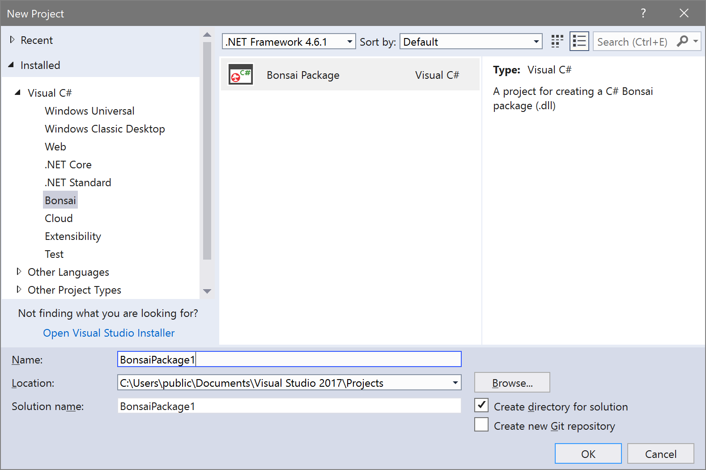
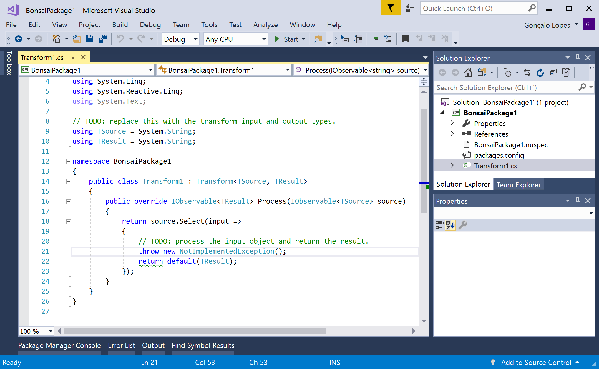
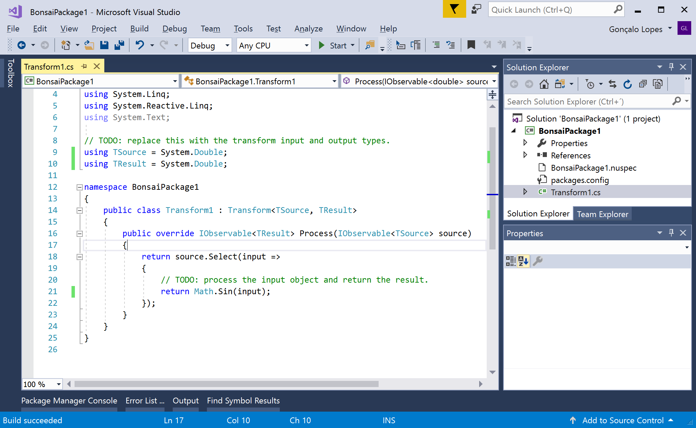
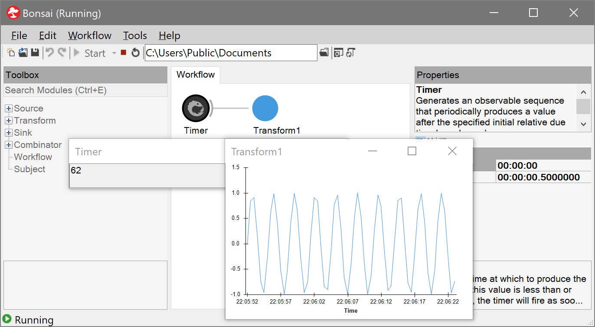
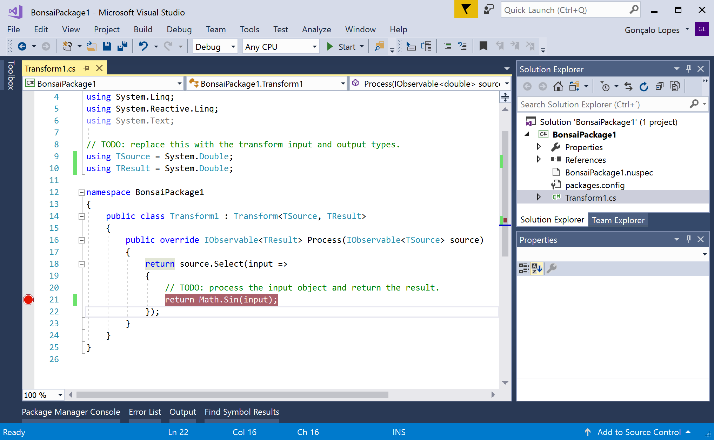
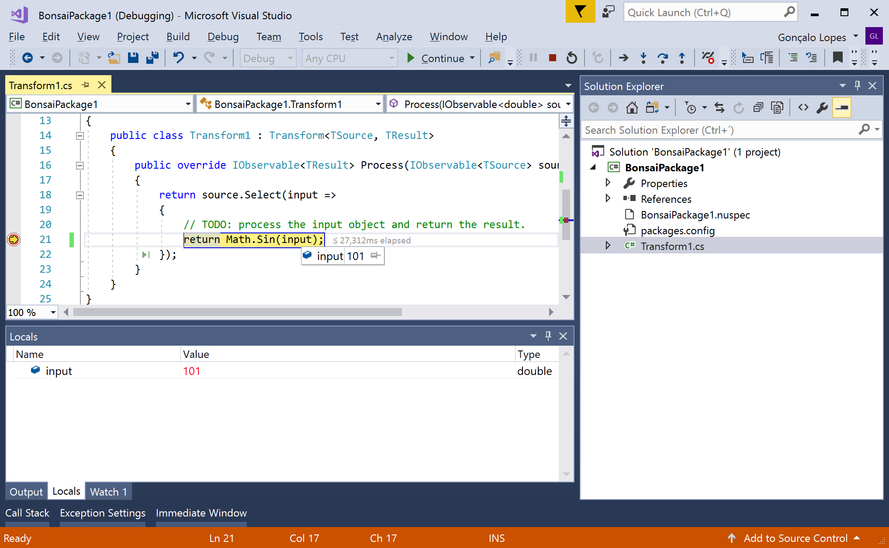

Creating a Package
The Bonsai language can be easily extended with custom operators, which are installed and shared using assembly packages. These packages are typically written in the C# programming language, using the Visual Studio development environment.
Install pre-requisites
- Visual Studio. You can install the Community edition for free.
- Bonsai VS Extensions. In the Windows Start Menu, search for the "Install Bonsai VS Extensions" shortcut and run it.
Create a package project
- Start Visual Studio.
- Create a New Project. In the New Project dialog, there should now be a project template for creating a Bonsai package, under Templates/Visual C#/Bonsai. 
- After the project is created, you should see that a file "Transform1.cs" has been created and added to the solution explorer. This file contains an example implementation of a custom transform node. 
TSourceandTResultspecify the input and output data types of the transform and you can modify them however you want. Every Bonsai node operates on observable sequences using the ReactiveX framework. Transforms are nodes which apply an operation to every item in the input sequence. The simplest way to implement a transform is by using theSelectoperator from Rx. As an example, we will modify the transform in order to apply a sine operation on numeric inputs. - We can test our transform by starting the project with F5. This will automatically launch the Bonsai editor with our package preloaded in the Toolbox. Add a
Timersource and ourTransform1node. Set the timer period to some reasonable value like 0.1 seconds and run the workflow.  - It is also possible to debug our code while it is running by setting breakpoints, either by clicking on the left of the line we want to debug or by hitting F9 over the target code. After this, you can run the code step by step and inspect the runtime value of variables.  